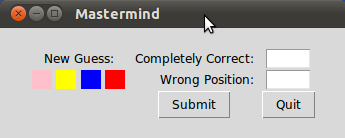

Mastermind / Bulls and Cows
Implementation in Python using Tkinter
 In this chapter of our advanced Python topics we present an implementation of the game Bulls and Cows using Tkinter as the GUI. This game, which is also known as "Cows and Bulls" or "Pigs and Bulls", is an old code-breaking game played by two players. The game goes back to the 19th century and can be played with paper and pencil. Bulls and Cows -- also known as Cows and Bulls or Pigs and Bulls or Bulls and Cleots -- was the inspirational source of Mastermind, a game invented in 1970 by Mordecai Meirowitz. The game is played by two players. Mastermind and "Bulls and Cows" are very similar and the underlying idea is essentially the same, but Mastermind is sold in a box with a decoding board and pegs for the coding and the feedback pegs. Mastermind uses colours as the underlying code information, while Bulls and Cows uses digits.The Algorithm is explained in detail in our chapter "Mastermind / Bulls and Cows" in Advanced Topics. You can also find the the code for the module combinatorics.
The Code for Mastermind
from tkinter import *
from tkinter.messagebox import *
import random
from combinatorics import all_colours
def inconsistent(p, guesses):
""" the function checks, if a permutation p, i.e. a list of
colours like p = ['pink', 'yellow', 'green', 'red'] is consistent
with the previous colours. Each previous colour permuation guess[0]
compared (check()) with p has to return the same amount of blacks
(rightly positioned colours) and whites (right colour at wrong
position) as the corresponding evaluation (guess[1] in the
list guesses) """
for guess in guesses:
res = check(guess[0], p)
(rightly_positioned, permutated) = guess[1]
if res != [rightly_positioned, permutated]:
return True # inconsistent
return False # i.e. consistent
def answer_ok(a):
""" checking of an evaulation given by the human player makes
sense. 3 blacks and 1 white make no sense for example. """
(rightly_positioned, permutated) = a
if (rightly_positioned + permutated > number_of_positions) \
or (rightly_positioned + permutated < len(colours) - number_of_positions):
return False
if rightly_positioned == 3 and permutated == 1:
return False
return True
def get_evaluation():
""" get evaluation from entry fields """
rightly_positioned = int(entryWidget_both.get())
permutated = int(entryWidget_only_colours.get())
return (rightly_positioned, permutated)
def new_evaluation(current_colour_choices):
""" This funtion gets an evaluation of the current guess, checks
the consistency of this evaluation, adds the guess together with
the evaluation to the list of guesses, shows the previous guesses
and creates a ne guess """
rightly_positioned, permutated = get_evaluation()
if rightly_positioned == number_of_positions:
return(current_colour_choices, (rightly_positioned, permutated))
if not answer_ok((rightly_positioned, permutated)):
print("Input Error: Sorry, the input makes no sense")
return(current_colour_choices, (-1, permutated))
guesses.append((current_colour_choices, (rightly_positioned, permutated)))
view_guesses()
current_colour_choices = create_new_guess()
show_current_guess(current_colour_choices)
if not current_colour_choices:
return(current_colour_choices, (-1, permutated))
return(current_colour_choices, (rightly_positioned, permutated))
def check(p1, p2):
""" check() calcualtes the number of bulls (blacks) and cows (whites)
of two permutations """
blacks = 0
whites = 0
for i in range(len(p1)):
if p1[i] == p2[i]:
blacks += 1
else:
if p1[i] in p2:
whites += 1
return [blacks, whites]
def create_new_guess():
""" a new guess is created, which is consistent to the
previous guesses """
next_choice = next(permutation_iterator)
while inconsistent(next_choice, guesses):
try:
next_choice = next(permutation_iterator)
except StopIteration:
print("Error: Your answers were inconsistent!")
return ()
return next_choice
def new_evaluation_tk():
global current_colour_choices
res = new_evaluation(current_colour_choices)
current_colour_choices = res[0]
def show_current_guess(new_guess):
row = 1
Label(root, text=" New Guess: ").grid(row=row,
column=0,
columnspan=4)
row +=1
col_count = 0
for c in new_guess:
print(c)
l = Label(root, text=" ", bg=c)
l.grid(row=row,column=col_count, sticky=W, padx=2)
col_count += 1
def view_guesses():
row = 3
Label(root, text="Old Guesses").grid(row=row,
column=0,
columnspan=4)
Label(root, text="c&p").grid(row=row,
padx=5,
column=number_of_positions + 1)
Label(root, text="p").grid(row=row,
padx=5,
column=number_of_positions + 2)
# dummy label for distance:
Label(root, text=" ").grid(row=row,
column=number_of_positions + 3)
row += 1
# vertical dummy label for distance:
Label(root, text=" ").grid(row=row,
column=0,
columnspan=5)
for guess in guesses:
guessed_colours = guess[0]
col_count = 0
row += 1
for c in guessed_colours:
print(guessed_colours[col_count])
l = Label(root, text=" ", bg=guessed_colours[col_count])
l.grid(row=row,column=col_count, sticky=W, padx=2)
col_count += 1
# evaluation:
for i in (0,1):
l = Label(root, text=str(guess[1][i]))
l.grid(row=row,column=col_count + i + 1, padx=2)
if __name__ == "__main__":
colours = ["red","green","blue","yellow","orange","pink"]
guesses = []
number_of_positions = 4
permutation_iterator = all_colours(colours, number_of_positions)
current_colour_choices = next(permutation_iterator)
new_guess = (current_colour_choices, (0,0) )
row_offset = 1
root = Tk()
root.title("Mastermind")
root["padx"] = 30
root["pady"] = 20
entryLabel = Label(root)
entryLabel["text"] = "Completely Correct:"
entryLabel.grid(row=row_offset,
sticky=E,
padx=5,
column=number_of_positions + 4)
entryWidget_both = Entry(root)
entryWidget_both["width"] = 5
entryWidget_both.grid(row=row_offset, column=number_of_positions + 5)
entryLabel = Label(root)
entryLabel["text"] = "Wrong Position:"
entryLabel.grid(row=row_offset+1,
sticky=E,
padx=5,
column= number_of_positions + 4)
entryWidget_only_colours = Entry(root)
entryWidget_only_colours["width"] = 5
entryWidget_only_colours.grid(row=row_offset+1, column=number_of_positions + 5)
submit_button = Button(root, text="Submit", command=new_evaluation_tk)
submit_button.grid(row=4,column=number_of_positions + 4)
quit_button = Button(root, text="Quit", command=root.quit)
quit_button.grid(row=4,column=number_of_positions + 5)
show_current_guess(current_colour_choices)
root.mainloop()